Rio the Octopus
The cybernetic octopus behind Honed Signal.
Rio is named for the river. He comes from Seguin, Texas — river country, where the Guadalupe runs through town. In Spanish, río means river — and rio also means “I laugh,” which suits the guide of the Honed Flint books, where he leads kids through Texas wildlife one drawing at a time. Eight arms, one for every direction the signal can travel — and nine brains to steer them: one in his head and one in every arm, which comes in handy when you're keeping up with fifty animals at once. His circuit faceplate glows with the same teal-to-orange gradient as the brand family — the signal cutting through the noise, made flesh. Or made octopus.
Here's his story so far, in pictures:
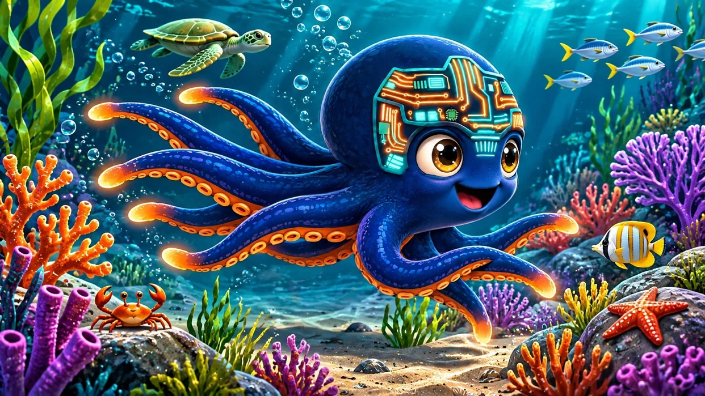
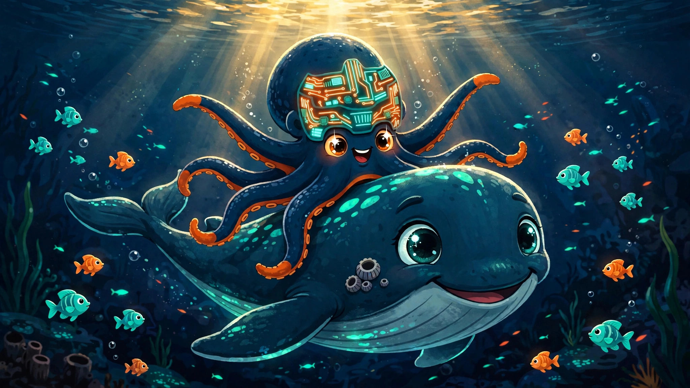
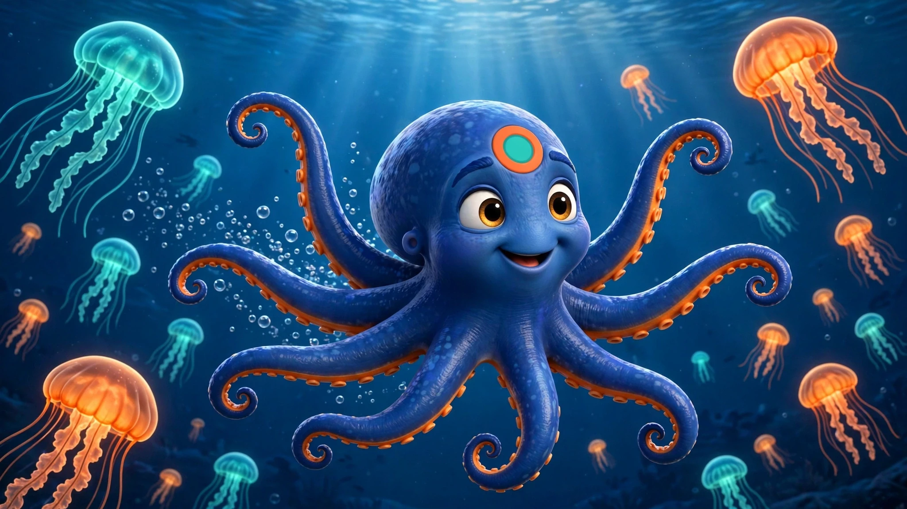
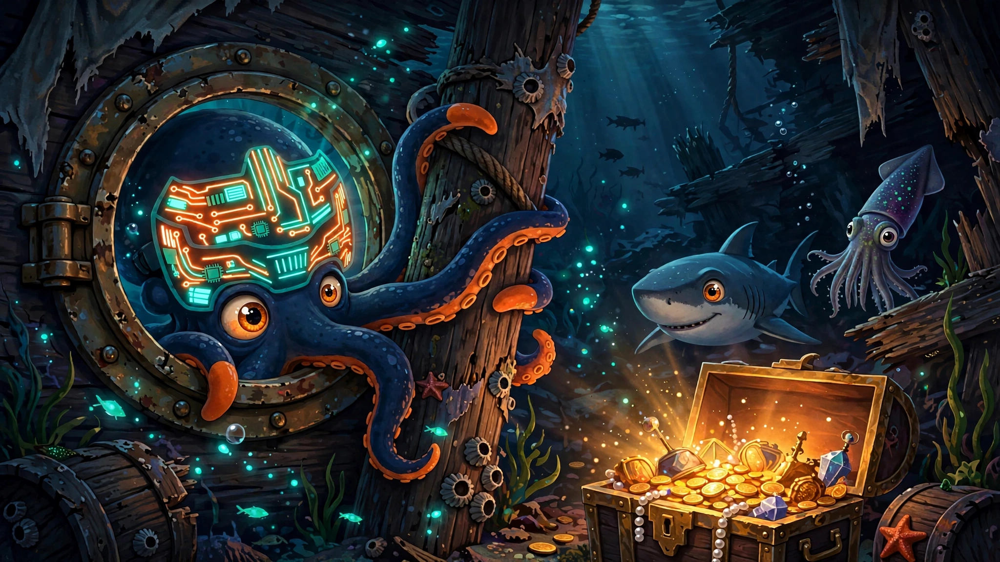
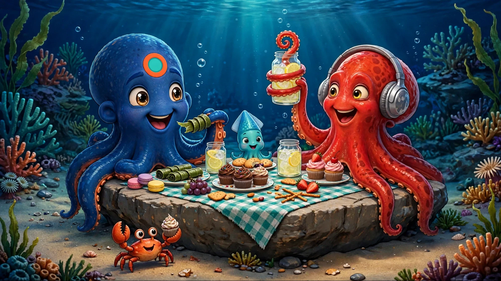
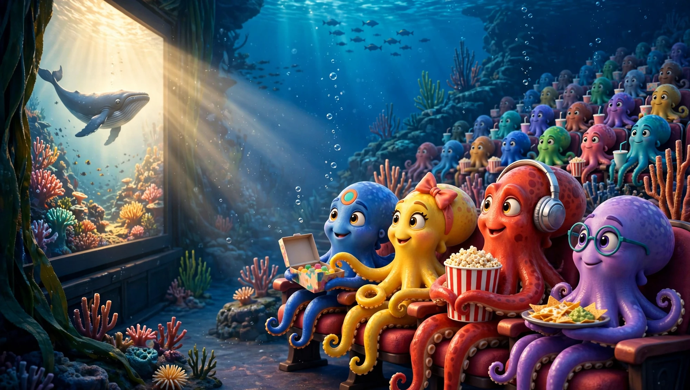
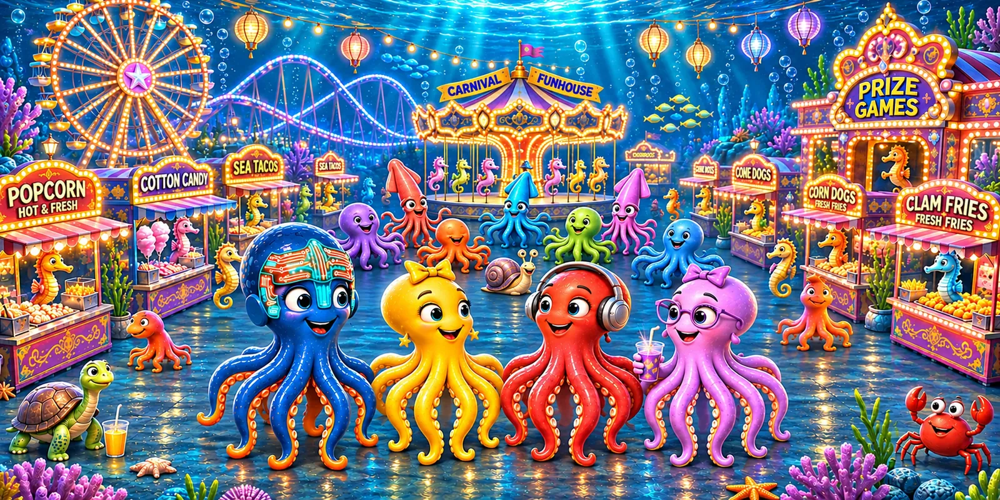
Rio at work
One octopus, four jobs — a portrait for every corner of the Honed family.
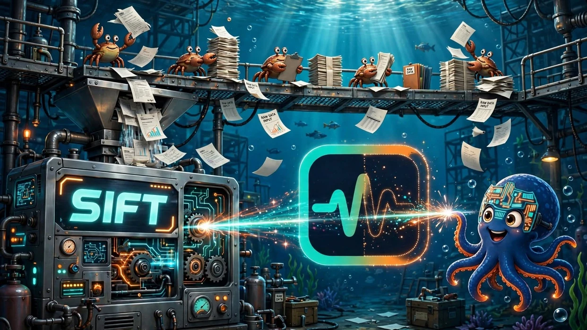
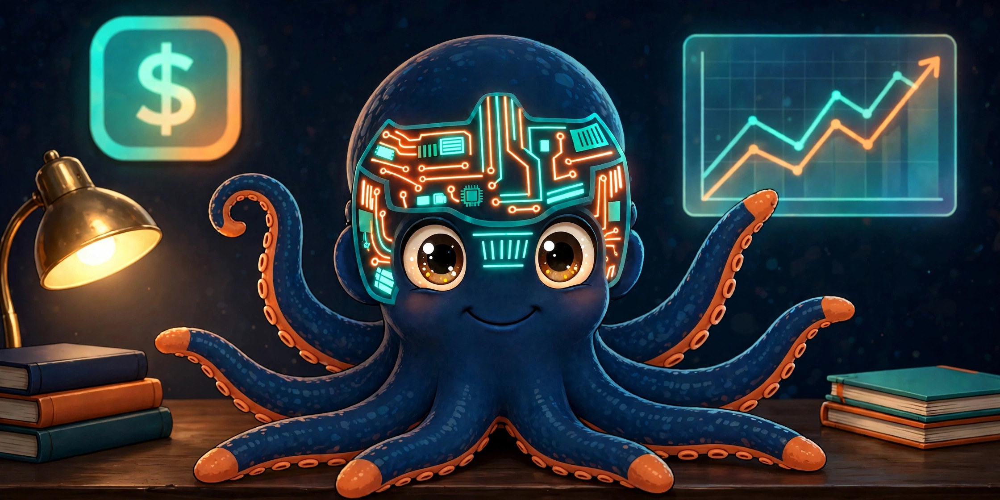
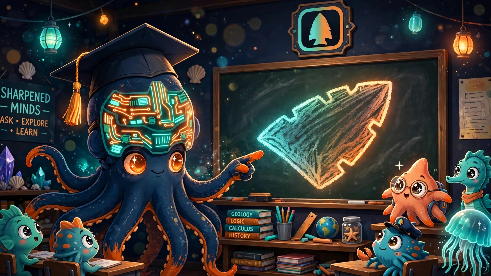
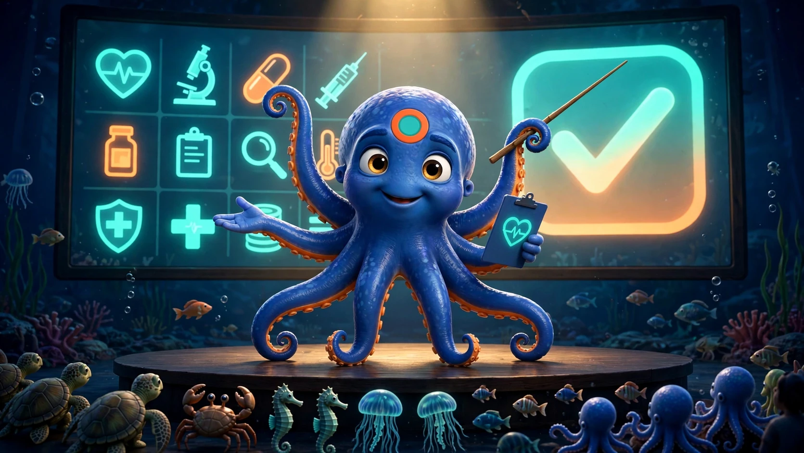
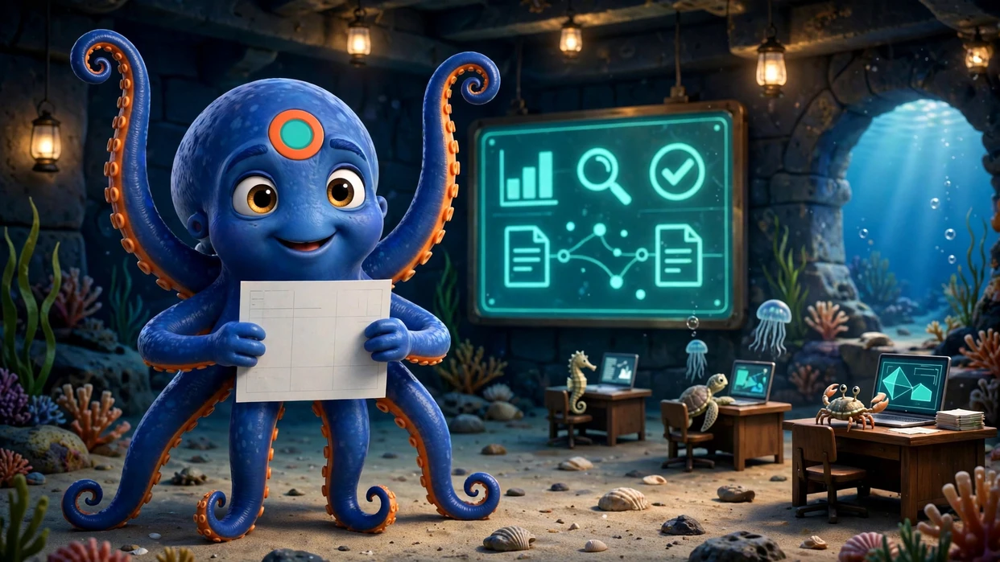
A note on the artwork
Rio the character was created with Meta AI, refined through several versions before this design was chosen. The illustrations on this page were generated with Muse in Honed Signal's storybook style — one is the exception — the picnic began as a Meta AI illustration, cleaned up with Muse, and Rio in it has since been redrawn in his new design with Muse. All of it is AI-generated — and every image was selected and approved by a human.